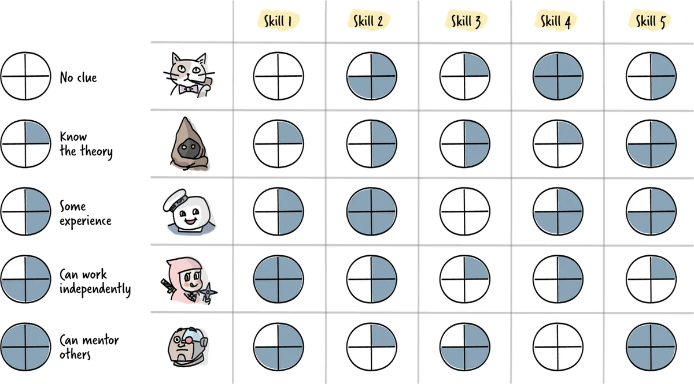

What this resource is for
Many dependency problems between teams are, at their root, capability problems. A team depends on another team because it lacks a skill that the other team has. A coordination bottleneck exists because no one in the team can do a particular thing without involving someone from outside. Understanding what skills exist where in an organisation — and what gaps and overlaps exist — is a prerequisite for intelligent structural design. This resource covers skills mapping as a diagnostic practice at the individual, team, and organisation levels.
Why skills visibility matters
In most organisations, the distribution of skills is poorly understood. Managers have a general sense of what their teams can do, but detailed knowledge of individual capabilities is patchy. Skills data is often outdated — people learn, grow, and change faster than any formal record-keeping system tracks. And crucially, the skills that exist in one part of the organisation are often invisible to the parts that need them most.
This invisibility has concrete consequences. Teams that could transfer knowledge to each other never do, because neither team knows what the other has to offer. Hiring decisions are made to fill perceived gaps that do not actually exist. Teams build in-house capabilities that duplicate expertise available elsewhere. Dependency structures harden into permanent features of the organisation because no one has mapped the skills that would allow them to be loosened.
Skills mapping addresses this by creating a shared, explicit picture of capability distribution. It is not primarily a performance management tool — it does not evaluate people against standards — it is a coordination tool that makes the invisible visible.
Levels of skills mapping
Skills mapping is most useful when conducted at three levels: individual, team, and organisation. Each level answers different questions and serves different purposes.
Individual-level mapping identifies the specific skills, knowledge areas, and experience each person holds. The goal is not to produce a CV but to make a strategic picture of capability legible. A common format is a skill matrix: a grid with team members on one axis and relevant competency areas on the other, with each cell indicating the individual's level in that competency. Simple four-point scales (Novice, Practitioner, Expert, Master/Teacher) tend to be more useful than fine-grained numerical ratings, because they are easier to interpret and less prone to false precision.
Individual-level mapping also captures a dimension that skill matrices often miss: the distinction between what someone can do and what they want to do. A person may be highly capable in a skill they no longer find engaging, or eager to develop in an area where they are currently a beginner. Including this dimension — sometimes called the "will vs. skill" distinction — produces a richer picture of capability and a more honest basis for development conversations.
Team-level mapping aggregates individual skills to assess the team's overall capability profile. The key questions are: what can this team deliver end-to-end without depending on external support? Where are the single points of failure — skills held by only one person? What critical capabilities are entirely absent? And how does the team's current skill distribution compare to what it needs to deliver its most important work in the next six to twelve months?
Team-level mapping also makes team coverage visible. If a team has ten people with strong backend skills and two with frontend skills, its capacity to work across the full stack is limited. This imbalance may be intentional and appropriate, or it may be a structural constraint that explains why the team perpetually depends on another team for frontend work.
Organisation-level mapping aggregates team-level pictures to identify patterns across the whole system. Which skills are concentrated in one part of the organisation? Where are the critical dependencies that flow from skill concentration? Which teams are structurally positioned to be knowledge brokers — holding skills that many other teams need? And which skills are so broadly distributed that there is no differentiated competency center for them anywhere?
Organisation-level mapping is particularly useful for strategic planning. When an organisation is moving into new territory — adopting AI-powered workflows, restructuring around new products, entering new markets — the skill gaps that will constrain that move become visible in the map before they become visible in the delivery data.
Practical approaches to building a skills map

The most important decision in skills mapping is who does the assessment. Self-assessment is more accurate than most managers expect — people are generally honest about their own capabilities when the purpose is development rather than evaluation, and the signal they provide about what they want to do is information that no manager can access otherwise. Combining self-assessment with peer calibration (where team members discuss and align on each other's ratings) tends to produce the most accurate and most legitimate results.
A practical skills mapping exercise follows a simple sequence. First, define the competency areas that matter for the team's current and planned work. These should be specific enough to be meaningful — "software engineering" is too broad; "backend API design," "data pipeline development," and "production incident management" are more useful. Second, ask each team member to rate themselves on each competency and to note which competencies they are most and least motivated to use. Third, facilitate a team session where the individual ratings are shared and discussed — gaps, surprises, and misalignments are usually visible in the conversation. Fourth, synthesise the team-level picture and identify the most important gaps and concentrations. Fifth, use the map as input to decisions about learning investment, team composition, dependency reduction, and hiring.
Skills mapping as input to dependency management
The direct connection between skills analysis and dependency discovery — the practice covered in Resource 06 — is that most technical and knowledge dependencies can be loosened by adding capability to the dependent team. If Team A depends on Team B because Team B has a data engineering expert and Team A does not, there are three structural responses: develop a data engineering capability within Team A, move someone with data engineering skills from Team B to Team A, or formalise the dependency as a service relationship (which does not remove the dependency but makes it more manageable).
Skills maps make these choices visible and concrete. Instead of a vague discussion about "reducing dependencies," you can point to a specific skill gap in a specific team and evaluate specific options for addressing it. This is the connection between the skills mapping work in the Cross-Team Collaboration module and the broader coordination pattern design work that follows.
Current vs. needed: the strategic gap
One of the most useful outputs of a skills mapping exercise is a gap analysis comparing current capabilities to what will be needed. This requires a forward-looking view of the work — where is the organisation going, and what skills will be required to get there?
In AI-accelerated organisations, this gap analysis frequently reveals a significant mismatch. Teams that have been highly capable in their current mode of working often lack the skills to work effectively in an AI-augmented environment — not because they lack technical ability, but because the nature of valuable work is shifting. Skills in problem framing, prompt engineering, output evaluation, workflow integration, and AI-related risk assessment are becoming increasingly important, and most teams have had limited opportunity to develop them.
Naming this gap explicitly — and making it visible in the skills map rather than treating it as an abstract organisational challenge — is the first step toward addressing it strategically rather than reactively.
Further reading
- Coens, T. & Jenkins, M. — Abolishing Performance Appraisals (covers the conditions under which skill assessment is more vs. less useful and legitimate)
- Hackman, J.R. — Leading Teams: Setting the Stage for Great Performances (covers the structural conditions — including skill composition and team boundaries — that determine team effectiveness)
- For the "will vs. skill" framework, the original source is most commonly attributed to Paul Hersey and Kenneth Blanchard's situational leadership model — Management of Organizational Behavior — though the specific framing has been widely adapted.